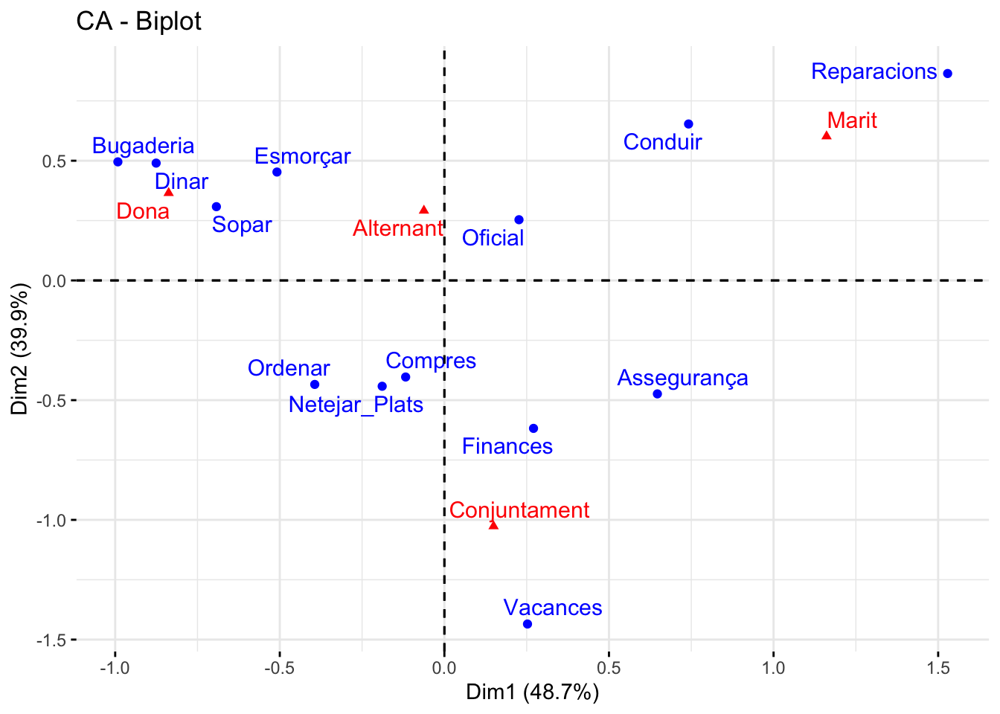
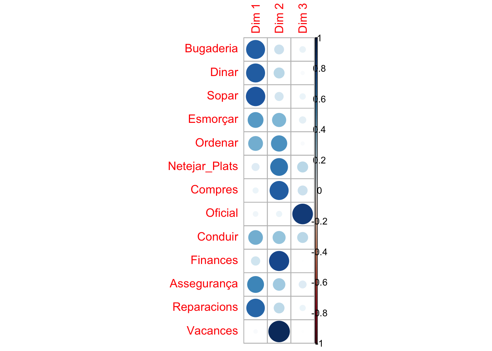

library("factoextra")
library("FactoMineR")
library("gplots")
library("dplyr")Anàlisis de Correspondències Simples (ACS)
1 Introducció
L’anàlisi de correspondencies simples (ACS) s’utilitza per a descriure taules de contingència 1 (TC) mitjançant la representació geomètrica de les taules de condicionals fila i columna (perfils) derivades d’aquelles.
L’objectiu de l’ACS és descriure les associacions entre les variables fila i columna, a través dels seus perfils:
Comparar els perfilis fila.
Comparar els perfilis columna.
Estudiar les correspondències entre perfils fila i columna
La metodologia la va desenvolupar Benzecri, a principis dels anys 60 del segle XX en la Universitat de Renner (França). En essència. és un tipus especial d’anàlisi de components principals però realitzat sobre una taula de contingència i usant una distància euclidiana ponderada anomenada chi-quadrat (\(\chi^{2}\))
1.1 Contrast de Chi-quadrat (\(\chi^{2}\))
La prova de chi-quadrat (\(\chi^{2}\)) és un mètode estadístic que s’utilitza per a determinar si existeix una associació significativa entre variables categòriques comparant les freqüències observades i esperades en una taula de contingència.
H0 : No hi ha associació significativa entre les variables.
H1 : Hi ha una associació significativa entre les variables.
Per a realitzar la prova chi-quadrat (\(\chi^{2}\)):
1- Crear una taula de contingència amb les freqüències observades per a cada categoria.
2- Calcular les freqüències esperades assumint la independència entre les variables.
3- Calcular l’estadístic chi-quadrat (\(\chi^{2}\)).
Comparar l’estadístic calculat amb el valor crític de la distribució chi-quadrat (\(\chi^{2}\)) per a determinar si es rebutja o no la hipòtesi nul·la.
\[ \chi^{2} = \sum{\frac{(O_{ij}-E_{ij})^{2}}{E_{ij}}} \] Ón:
\(chi-quadrat (\)^{2}\()\): El estadístic de prova \(\chi^{2}\), medeix la discrepancia entre els valors observats i els esperats
\(\sum\) (sigma): Suma els valors de cada cela de la taula de contingència.
\(O_{ij}\): La freqüència observada en cada cel·la de la taula de contingència.
\(E_{ij}\): La freqüència esperada en cada cel·la de la taula de contingència.
Casos d’ús d’exemple
Avaluar la relació entre les variables demogràfiques (per exemple, edat, gènere, ingressos) i les preferències del consumidor o el comportament de compra.
Examinar l’associació entre els factors de risc i els resultats de les malalties, com el tabaquisme i la incidència el càncer de pulmó.
Explorar la relació entre variables categòriques com el nivell educatiu i la situació laboral o l’afiliació política i el comportament electoral.
Determinar si els patrons d’herència observats són consistents amb les proporcions mendelianes esperades, o si uns certs marcadors genètics estan associats amb trets o malalties específiques.
Avaluar la relació entre les variables de control de qualitat, com el tipus de defecte, i la línia de producció.
Suposicions
Independència: L’ocurrència d’una observació no ha d’influir ni ser influenciada per una altra observació.
Categòric: Totes dues variables són per a dades categòriques.
Mútuament excloents: Les observacions només poden pertànyer a una cel·la de la taula de contingència.
Grandària de la mostra: Ha d’haver-hi almenys cinc observacions en cada cel·la de la taula de contingència.
Proves alternatives
Prova exacta de Fisher: adequada quan la grandària de la mostra és petit i les freqüències de cel·la esperades en la taula de contingència són inferiors a 5. Sovint s’utilitza com a alternativa a la prova de chi-quadrat en taules de contingència de 2x2.
Prova de McNemar: s’utilitza en analitzar dades categòriques aparellades, generalment en una taula de contingència de 2x2, on les observacions són dependents o estan relacionades. S’utilitza comunament en estudis d’abans i després o en estudis de casos i controls aparellats.
Prova de Cochran-Estovalles-Haenszel: s’utilitza en analitzar dades categòriques en estudis estratificats o aparellats. Permet la comparació de múltiples taules de contingència 2x2 mentre controla variables de confusió o factors d’estratificació.
2 Definició del problema
data("housetasks")
head(housetasks) Wife Alternating Husband Jointly
Laundry 156 14 2 4
Main_meal 124 20 5 4
Dinner 77 11 7 13
Breakfeast 82 36 15 7
Tidying 53 11 1 57
Dishes 32 24 4 53colnames(housetasks) <- c("Dona", "Alternant", "Marit", "Conjuntament")
rownames(housetasks) <- c("Bugaderia", "Dinar", "Sopar", "Esmorçar", "Ordenar", "Netejar_Plats", "Compres", "Oficial", "Conduir", "Finances", "Assegurança", "Reparacions", "Vacances")
df <- as.table(as.matrix(housetasks))
df Dona Alternant Marit Conjuntament
Bugaderia 156 14 2 4
Dinar 124 20 5 4
Sopar 77 11 7 13
Esmorçar 82 36 15 7
Ordenar 53 11 1 57
Netejar_Plats 32 24 4 53
Compres 33 23 9 55
Oficial 12 46 23 15
Conduir 10 51 75 3
Finances 13 13 21 66
Assegurança 8 1 53 77
Reparacions 0 3 160 2
Vacances 0 1 6 153balloonplot(t(df), label=F, main="Tareas del hogar")3 Prova de la \(\chi^{2}\)
\(H_{0}\): Variables independents (hipòtesi nula) \(H_{1}\): Variables dependents (hipòtesi alternativa)
chisq.test(housetasks)
Pearson's Chi-squared test
data: housetasks
X-squared = 1944.5, df = 36, p-value < 2.2e-16Es refusa l’hipòtesi nula en favor de la alternativa, les parelles s’organitzen per fer les tasques de la llar.
4 Anàlisi de Correspondència Simple (ACS)
housetasks_CA <- CA(housetasks, graph = F)
print(housetasks_CA)**Results of the Correspondence Analysis (CA)**
The row variable has 13 categories; the column variable has 4 categories
The chi square of independence between the two variables is equal to 1944.456 (p-value = 0 ).
*The results are available in the following objects:
name description
1 "$eig" "eigenvalues"
2 "$col" "results for the columns"
3 "$col$coord" "coord. for the columns"
4 "$col$cos2" "cos2 for the columns"
5 "$col$contrib" "contributions of the columns"
6 "$row" "results for the rows"
7 "$row$coord" "coord. for the rows"
8 "$row$cos2" "cos2 for the rows"
9 "$row$contrib" "contributions of the rows"
10 "$call" "summary called parameters"
11 "$call$marge.col" "weights of the columns"
12 "$call$marge.row" "weights of the rows" housetasks_CA$col$coord
Dim 1 Dim 2 Dim 3
Dona -0.83762154 0.3652207 -0.19991139
Alternant -0.06218462 0.2915938 0.84858939
Marit 1.16091847 0.6019199 -0.18885924
Conjuntament 0.14942609 -1.0265791 -0.04644302
$contrib
Dim 1 Dim 2 Dim 3
Dona 44.462018 10.312237 10.8220753
Alternant 0.103739 2.782794 82.5492464
Marit 54.233879 17.786612 6.1331792
Conjuntament 1.200364 69.118357 0.4954991
$cos2
Dim 1 Dim 2 Dim 3
Dona 0.801875947 0.1524482 0.045675847
Alternant 0.004779897 0.1051016 0.890118521
Marit 0.772026244 0.2075420 0.020431728
Conjuntament 0.020705858 0.9772939 0.002000236
$inertia
[1] 0.3010185 0.1178242 0.3813729 0.3147248housetasks_CA$row$coord
Dim 1 Dim 2 Dim 3
Bugaderia -0.9918368 0.4953220 -0.31672897
Dinar -0.8755855 0.4901092 -0.16406487
Sopar -0.6925740 0.3081043 -0.20741377
Esmorçar -0.5086002 0.4528038 0.22040453
Ordenar -0.3938084 -0.4343444 -0.09421375
Netejar_Plats -0.1889641 -0.4419662 0.26694926
Compres -0.1176813 -0.4033171 0.20261512
Oficial 0.2266324 0.2536132 0.92336416
Conduir 0.7417696 0.6534143 0.54445849
Finances 0.2707669 -0.6178684 0.03479681
Assegurança 0.6470759 -0.4737832 -0.28936051
Reparacions 1.5287787 0.8642647 -0.47208778
Vacances 0.2524863 -1.4350066 -0.12958665
$contrib
Dim 1 Dim 2 Dim 3
Bugaderia 18.2867003 5.5638913 7.96842443
Dinar 12.3888433 4.7355230 1.85868941
Sopar 5.4713982 1.3210221 2.09692603
Esmorçar 3.8249284 3.6986131 3.06939857
Ordenar 1.9983518 2.9656441 0.48873403
Netejar_Plats 0.4261663 2.8441170 3.63429434
Compres 0.1755248 2.5151584 2.22335679
Oficial 0.5207837 0.7956201 36.94038942
Conduir 8.0778371 7.6468564 18.59638635
Finances 0.8750075 5.5585460 0.06175066
Assegurança 6.1470616 4.0203590 5.25263863
Reparacions 40.7300940 15.8806509 16.59639139
Vacances 1.0773030 42.4539986 1.21261994
$cos2
Dim 1 Dim 2 Dim 3
Bugaderia 0.73998741 0.18455213 0.075460467
Dinar 0.74160285 0.23235928 0.026037873
Sopar 0.77664011 0.15370323 0.069656660
Esmorçar 0.50494329 0.40023001 0.094826699
Ordenar 0.43981243 0.53501508 0.025172490
Netejar_Plats 0.11811778 0.64615253 0.235729693
Compres 0.06365362 0.74765514 0.188691242
Oficial 0.05304464 0.06642648 0.880528877
Conduir 0.43201860 0.33522911 0.232752289
Finances 0.16067678 0.83666958 0.002653634
Assegurança 0.57601197 0.30880208 0.115185951
Reparacions 0.70673575 0.22587147 0.067392778
Vacances 0.02979239 0.96235977 0.007847841
$inertia
[1] 0.13415976 0.09069235 0.03824633 0.04112368 0.02466697 0.01958732
[7] 0.01497017 0.05330000 0.10150885 0.02956446 0.05793584 0.31287411
[13] 0.19631064fviz_screeplot(housetasks_CA, addlabel=T)El 89% de la variança de les variables están explicades per les dimensiones 1 i 2.
fviz_ca_biplot(housetasks_CA,repel = T)
La descripció del gràfic és el següent:
- Blau: Corresponen a les files
- Vermell: Corresponen a les columnes
D’aqui podem extreure les següents conclusions:
1- Les tasques de dinar, sopar, estendre i esmorçar son realitzades amb més freqüéncia per les dones.
2- Les tasques de conduir i fer reparacions es realitzen amb més freqüéncia pels marits.
3- Les tasques de vacances, finances i seguretat ho fan en conjunt.
Per tal de poder descriure les dimensions, podem realitzar un gràfic de correlacions.
library(corrplot)
corrplot(housetasks_CA$col$cos2)
Utilitzem la distància \(cos^{2}\) per la variable de tasques.
corrplot(housetasks_CA$row$cos2 )
D’aquí podem extreure que:
La 1a component fa referència a tasques realitzades de manera individual
La 2a component fa referència a tasques realitzades de manera col·lectiva.
A continuació anem a veure la contribució de cada columna a cada dimensió:
fviz_contrib(housetasks_CA, choice = "col" ,axes = 1)fviz_contrib(housetasks_CA, choice = "col" ,axes = 2)fviz_contrib(housetasks_CA, choice = "col" ,axes = 1:2)fviz_contrib(housetasks_CA, choice = "row" ,axes = 1)fviz_contrib(housetasks_CA, choice = "row" ,axes = 2)fviz_contrib(housetasks_CA, choice = "row" ,axes = 1:2)fviz_ca_biplot(housetasks_CA,repel = T, arrow = c(F,T), col.col = "cos2",
gradient.cols = c("red", "yellow", "green"),
alpha.col = "contrib")Esta web está creada por Dante Conti y Sergi Ramírez, (c) 2025
Footnotes
En estadística les taules de contingència s’empren per a registrar i analitzar l’associació entre dues o més variables, habitualment de naturalesa qualitativa (nominals o ordinals).↩︎